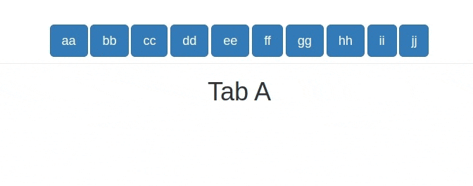

Context
Let’s talk about injections… Code & data injections, to be specific.
If you have built any sizeable shiny app, then you’ve probably had to handle many hidden tab panels.
You end up with code which looks like this:
global.R
library(shiny)ui.R
# btns to switch from one tab to the other:
btns <- lapply(letters[1:10], \(letter) {
actionButton(
inputId = paste0("btn_", letter),
label = paste0(letter, letter),
class = "btn-primary btn-lg"
)
})
tabs <- tabsetPanel(
id = "tabs",
type = "hidden",
selected = "a",
tabPanelBody(value = "a", tags$h1("Tab A")),
tabPanelBody(value = "b", tags$h1("Tab B")),
tabPanelBody(value = "c", tags$h1("Tab C")),
tabPanelBody(value = "d", tags$h1("Tab D")),
tabPanelBody(value = "e", tags$h1("Tab E")),
tabPanelBody(value = "f", tags$h1("Tab F")),
tabPanelBody(value = "g", tags$h1("Tab G")),
tabPanelBody(value = "h", tags$h1("Tab H")),
tabPanelBody(value = "i", tags$h1("Tab I")),
tabPanelBody(value = "j", tags$h1("Tab J"))
)
ui <- fluidPage(
tags$div(
class = "container text-center",
tags$div(class = "page-header", btns),
tabs
)
)server.R
server <- \(input, output, session) {
# switch to selected tab:
switch_tabs <- \(selected) {
freezeReactiveValue(x = input, name = "tabs")
updateTabsetPanel(
session = session,
inputId = "tabs",
selected = selected
)
}
# add btn observers:
lapply(letters[1:10], \(letter) {
btn_id <- paste0("btn_", letter)
observeEvent(input[[btn_id]], switch_tabs(letter))
})
}
Problem isolation
server.R looks good.
Let’s focus on ui.R, specifically on the tabs.
tabs <- tabsetPanel(
id = "tabs",
type = "hidden",
selected = "a",
tabPanelBody(value = "a", tags$h1("Tab A")),
tabPanelBody(value = "b", tags$h1("Tab B")),
tabPanelBody(value = "c", tags$h1("Tab C")),
tabPanelBody(value = "d", tags$h1("Tab D")),
tabPanelBody(value = "e", tags$h1("Tab E")),
tabPanelBody(value = "f", tags$h1("Tab F")),
tabPanelBody(value = "g", tags$h1("Tab G")),
tabPanelBody(value = "h", tags$h1("Tab H")),
tabPanelBody(value = "i", tags$h1("Tab I")),
tabPanelBody(value = "j", tags$h1("Tab J"))
)One thing is clear: the tabPanelBody()s are wet, not DRY. (Yes, I’m actually smiling right now).
Realistically, the content of each tabPanelBody() is usually a call to a module which I give the same id as the value of the tabPanelBody().
I have used h1 tags here for simplification.
To avoid repetition, let’s use lapply():
panel_bodies <- lapply(letters[1:10], \(value) {
tabPanelBody(
value = value,
tags$h1(
paste("tab", value) |> stringr::str_to_title()
)
)
})If you have modules you’d have to use Map() so that you iterate over the values/ids and modules.
For example:
panel_bodies <- Map(
f = \(value, mod_ui) {
tabPanelBody(value = value, mod_ui(id = value))
},
list(
"home", "generate_shifts", "leave_application",
"manage_employees", "download_shifts"
),
list(
mod_home_ui, mod_generate_shifts_ui, mod_leave_application_ui,
mod_manage_employees_ui, mod_download_shifts_ui
)
)I digress. Back to the lapply().
We now no longer repeat ourselves. Yeeey!
But our joy is not meant to last long: how do we pass this list of tabPanelBody()s to tabsetPanel()?
This will not work:
tabsetPanel(
id = "tabs",
type = "hidden",
selected = "a",
panel_bodies
)Error: Navigation containers expect a collection of `bslib::nav_panel()`/`shiny::tabPanel()`s and/or `bslib::nav_menu()`/`shiny::navbarMenu()`s. Consider using `header` or `footer` if you wish to place content above (or below) every panel's contents.tabsetPanel() expects the bare tabPanelBody()s, without wrappers (in this case a list).
Good-old do.call()
My first thought when I encountered this was to use do.call().
Since we already have some default arguments passed to tabsetPanel(), we have to modify the approach to do.call() a little bit:
# a wrapper function with default args to `tabsetPanel()`
tp <- \(...) {
tabsetPanel(
id = "tabs",
type = "hidden",
selected = "a",
...
)
}
do.call(what = tp, args = panel_bodies)Enter rlang::inject().
The older I grow, the more I prefer reading the docs, so:
?rlang::`!!!`The splice operator
!!! implemented in dynamic dots injects a list of arguments into a function call. It belongs to the family of injection operators and provides the same functionality asdo.call().The two main cases for splice injection are:
- Turning a list of inputs into distinct arguments. This is especially useful with functions that take data in
..., such asbase::rbind().dfs <- list(mtcars, mtcars) inject(rbind(!!!dfs))…
This is exactly what we need. Let’s now inject the tabPanelBody()s into the tabsetPanel():
tabs <- rlang::inject(
tabsetPanel(
id = "tabs",
type = "hidden",
selected = "a",
!!!panel_bodies
)
)Shiny comes with injection support out of the box. Therefore, there’s no need to wrap the code in rlang::inject():
tabs <- tabsetPanel(
id = "tabs",
type = "hidden",
selected = "a",
!!!panel_bodies
)This is way cleaner and also visually appealing.
There are numerous applications of code & data injection. Check out more in the docs.